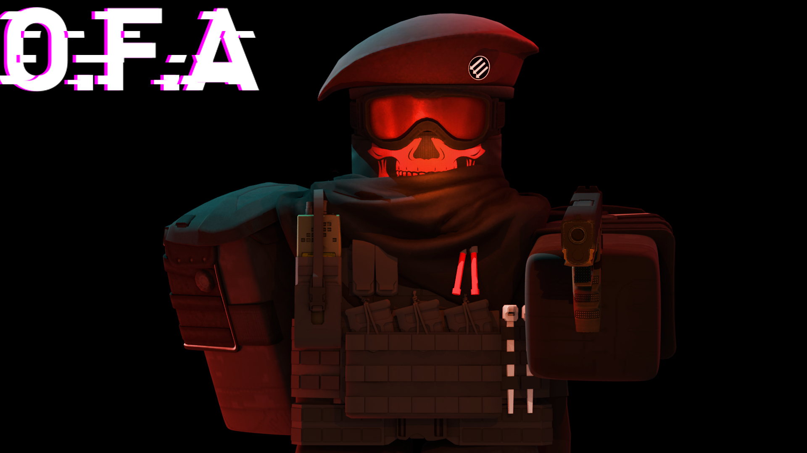
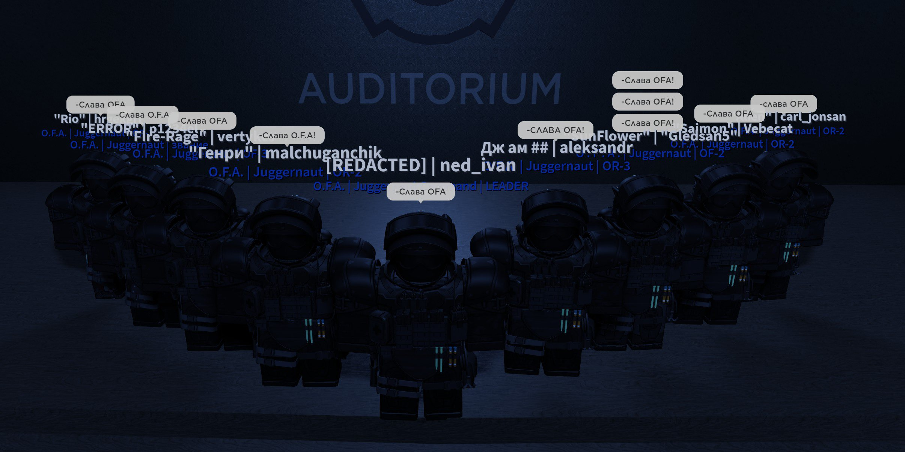

История
Глава 1: Создание OFA и спецзадание (2012-2015) С началом 2012 года Великобритания столкнулась с неурегулированными и напряженными событиями. В течение трех лет с 2012 по 2015 годы, высококвалифицированные сотрудники специальных подразделений Министерства обороны Великобритании и разведывательных служб внимательно следили за усиливающимися социальными протестами и беспорядками на улицах страны. Они осознали, что подобное несогласие и хаос могут представлять серьезную угрозу для безопасности нации. В ответ на сложившуюся ситуацию, эти выдающиеся специалисты объединили свои усилия и решили создать специализированную организацию, которая смогла бы эффективно справляться с возникшими угрозами и вызовами. Так появилась Организация специальных сотрудников, которую они назвали OFA (Объединение за мир и свободу). С самого начала OFA стала важной и секретной силой, занимающейся специальными операциями особой важности. Они были задействованы в выполнении множества сложных и рискованных миссий, направленных на предотвращение возможных угроз национальной безопасности. Глава 2: Переход OFA из отдела в организацию Со временем OFA стала все более профессиональной и организованной структурой. За время своего существования они привлекли к себе лучших из лучших сотрудников, включая элитных бойцов, аналитиков и разведчиков. OFA превратилась из небольшого отдела в полноценную организацию, четко определив свои задачи и миссию. Их навыки и оперативность привлекли внимание высокопоставленных лиц, и OFA стала востребованным партнером для других официальных организаций и правительств. Благодаря своей хорошо слаженной командной работе и успешным миссиям, OFA стала силой, на которую можно положиться в самых критических ситуациях. Глава 3: Начало сотрудничества с фондом С развитием и расширением OFA стало очевидно, что их цели и цели SCP Foundation пересекаются. Им было предложено сотрудничество с Фондом - международной организацией, занимающейся исследованием и управлением аномальными объектами и явлениями. После множества переговоров OFA и SCP Foundation заключили партнерское соглашение. Это сотрудничество стало ключевым фактором в обеспечении безопасности и мира. OFA получили доступ к более широкому спектру ресурсов и информации, позволяющих им эффективнее противостоять аномальным угрозам. Так началось продуктивное сотрудничество OFA с SCP Foundation, которое продолжается и по сей день. Объединение их сил и знаний стало сильным фактором в обеспечении безопасности и мира, и они стремятся преодолеть любые препятствия в этом важном деле. OFA продолжают свою миссию защиты и поддержания мира в мире аномалий и опасных явлений. Глава 4: Борьба с аномальными угрозами Сотрудничество OFA с SCP Foundation принесло организации новые вызовы и возможности. Как и SCP Foundation, OFA сталкивалась с аномальными объектами и явлениями, которые представляли потенциальную угрозу для общества. Их сотрудничество было направлено на борьбу с этими аномальными угрозами и предотвращение катастроф. OFA активно участвовали в миссиях по исследованию и захвату аномальных объектов, а также по ликвидации возникших из-за них угроз. Вместе с SCP Foundation они проводили слаженные операции, которые включали в себя высокотехнологичное снаряжение, специальные тактики и тщательную подготовку. Одной из наиболее сложных миссий для OFA стала операция по предотвращению контроля аномального объекта, способного вызвать разрушительные последствия. Этот объект обладал невероятной силой и мог привести к мировой катастрофе, если бы попал в неправильные руки. Однако благодаря профессионализму и решимости сотрудников OFA, они успешно справились с задачей и предотвратили возможную угрозу. Глава 5: Развитие и дальнейшее сотрудничество С каждым успешным выполненным заданием, OFA укрепляли свои позиции и привлекали все больше ресурсов и поддержки. Их репутация надежных и профессиональных оперативников привлекла внимание высокопоставленных лиц и других официальных организаций. Сотрудничество с SCP Foundation продолжало приносить результаты. OFA обнаружили, что их совместные усилия дают максимально эффективные результаты в обеспечении безопасности и предотвращении аномальных угроз. Они также расширили свои горизонты и начали сотрудничать с другими официальными организациями и правительствами по всему миру. Это позволило им получить дополнительные ресурсы, обменять опытом и найти новые пути для предотвращения глобальных аномальных угроз. Однако, несмотря на свое разнообразное сотрудничество, OFA сохраняли свою независимость и способность принимать быстрые решения при необходимости. Они оставались верны своим целям защиты и поддержания мира в мире аномалий и опасных явлений. Глава 6: Верность целям и стремление к миру Одной из ключевых черт OFA была их верность целям - защите мира и свободы. Они продолжали работать в тени, выполняя специальные операции особой важности и противостояние аномальным угрозам. Сотрудничество с SCP Foundation и другими организациями помогло OFA стать ключевым игроком в глобальной борьбе за безопасность и мир. Их профессионализм, преданность и способность быстро адаптироваться к сложным ситуациям делают их непревзойденными защитниками нации и мира от аномальных опасностей. OFA продолжают свою миссию защиты и поддержания мира в мире аномалий и опасных явлений. Они стремятся преодолеть любые препятствия и оставаться на передовой борьбы за безопасность и стабильность, всегда готовые к новым вызовам и приключениям в служении своей стране и всему человечеству.
История
Здравствуйте многоуважаемый Совет [REDACTED]! Мы, OFA - Организация, цель которой, помощь официальным организациям. Мы сотрудничаем с мировыми лидерами, а также с множеством официальных организаций. Данным сообщением мы хотим выразить наше желание прекратить любые боевые действия связанные с нами и SCP Foundation. Также мы готовы сотрудничать с вами как с официальной организацией. В наших рядах находятся исключительно высококвалифицированные бойцы, которые никак не могут уступать элитным подразделениям МОГ. В наше вооружение входит новейший автомат АК-12 2016 года представленный публике в 2012 году, а также мощнейшими ручными миниганами и гранатомётами РПГ. Высокопоставленные бойцы владеют мощнейшими автоматами-дробовиками современности, что позволяет им быстро ликвидировать противника. В заключение мы готовы закрыть глаза на похищение наших бойцов в случае подписание мирного договора.